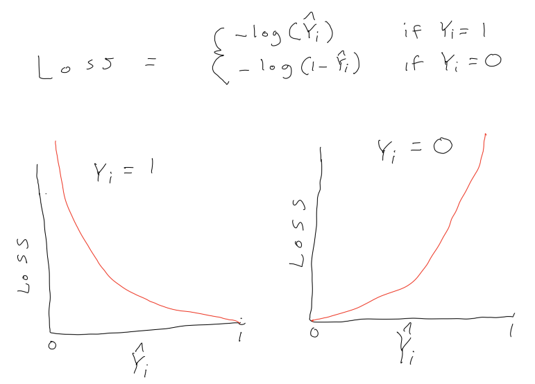
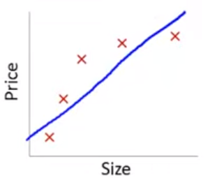
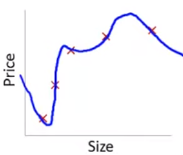
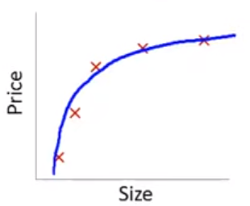
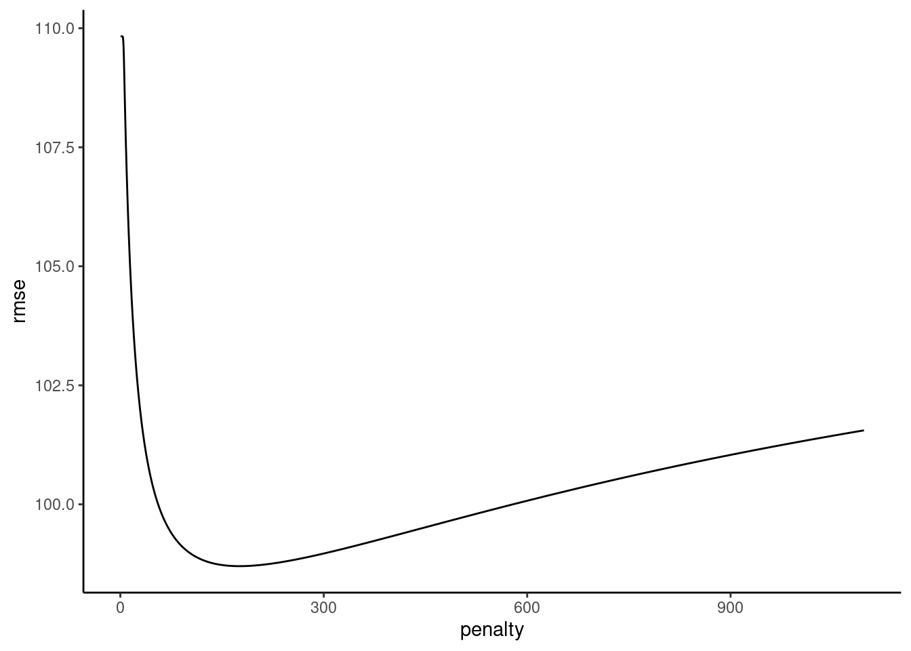

Code
n_cases_trn <- 100
n_cases_test <- 1000
n_x <- 20
covs_x <- 50
vars_x <- 100
b_x <- rep(1, n_x) # one unit change in y for 1 unit change in x
y_error <- 100Complex (e.g., flexible) models increase the chance of overfitting to the training set. This leads to:
Complex models are difficult to interpret
Regularization is technique that:
Regularization does this by applying a penalty to the parametric model coefficients (parameter estimates)
We will consider three approaches to regularization
These approaches are available for both regression and classification problems and for a variety of parametric statistical algorithms
To understand regularization, we need to first explicitly consider loss/cost functions for the parametric statistical models we have been using.
A loss function quantifies the error between a single predicted and observed outcome within some statistical model.
A cost function is simply the aggregate of the loss across all observations in the training sample.
Optimization procedures (least squares, maximum likelihood, gradient descent) seek to determine a set of parameter estimates that minimize some specific cost function for the training sample.
The cost function for the linear model is the mean squared error (squared loss):
\(\frac{1}{n}\sum_{i = 1}^{n} (Y_i - \hat{Y_i})^{2}\)
No constraints or penalties are placed on the parameter estimates (\(\beta_k\))
They can take on any values with the only goal to minimize the MSE in the training sample
The cost function for logistic regression is log loss:
\(\frac{1}{n}\sum_{i = 1}^{n} -Y_ilog(\hat{Y_i}) - (1-Y_i)log(1-\hat{Y_i})\)
where \(Y_i\) is coded 0,1 and \(\hat{Y_i}\) is the predicted probability that Y = 1
Again, no constraints or penalties are placed on the parameter estimates (\(\beta_k\))
They can take on any values with the only goal to minimize the sum of the log loss in the training sample

This is an example from a series of wonderfully clear lectures in a machine learning course by Andrew Ng in Coursera.
Lets imagine a training set:

If we fit a linear model with size as the only feature…
\(\hat{sale\_price_i} = \beta_0 + \beta_1 * size\)
In this training set, we might get the model below (in blue)
This is a biased model (predicts too high for low and high house sizes; predicts too low for moderate size houses)
If we took this model to new data from the same quadratic DGP, it would clearly not predict very well

Lets consider the other extreme

This problem with overfitting and variance isn’t limited to polynomial regression.
We would have the same problem (perfect fit in training with poor fit in new val data) if we predicted housing prices with many features when the training N = 5. e.g.,
\(\hat{sale\_price_i} = \beta_0 + \beta_1 * size + \beta_2 * year\_built + \beta_3 * num\_garages + \beta_4 * quality\)
Obviously, the correct model to fit is a second order polynomial model with size

What if we still fit a fourth order polynomial but changed the cost function to penalize the absolute value of \(\beta_3\) and \(\beta_4\) parameter estimates?
Typical cost based on MSE/squared loss:
Our new cost function:
\([\frac{1}{n}\sum_{i = 1}^{n} (Y_i - \hat{Y_i})^{2}] + [1000 * \beta_3 + 1000 * \beta_4]\)
The only way to make the value of this new cost function small is to make \(\beta_3\) and \(\beta_4\) small
If we made the penalty applied to \(\beta_3\) and \(\beta_4\) large (e.g., 1000 as above), we will end up with the parameter estimates for these two features at approximately 0.
With a sufficient penalty applied, their parameter estimates will only change from zero to the degree that these changes accounted for a large enough drop in MSE to offset this penalty in the overall aggregate cost function.
\([\sum_{i = 1}^{n} (Y_i - \hat{Y_i})^{2}] + 1000 * \beta_3 + 1000 * \beta_4\)

Of course, we don’t typically know in advance which parameter estimates to penalize.
In general, regularization produces models that:
These benefits are provided by the introduction of some bias into the parameter estimates
This allows for a bias-variance trade-off where some bias is introduced for a big reduction in variance of model fit
We will now consider three regularization approaches that introduce different types of penalties to shrink the parameter estimates
These approaches are available for both regression and classification problems and for a variety of parametric statistical algorithms
A fourth common regularized classification model (also sometimes used for regression) is the support vector machine (not covered in class but commonly used as well and easy to understand with this foundation)
Each of these approaches uses a different specific penalty, which has implications for how the model performs in different settings
The cost function for Ridge Regression is:
It has two components:
This penalty:
\(\frac{1}{n}([\sum_{i = 1}^{n} (Y_i - \hat{Y_i})^{2}] + [\:\lambda\sum_{j = 1}^{p} \beta_j^{2}\:])\)
As lambda increases, the model becomes less flexible b/c its parameter estimates become constrained/shrunk. This will increase bias but decrease variance for model performance.
\(\frac{1}{n}([\sum_{i = 1}^{n} (Y_i - \hat{Y_i})^{2}] + [\:\lambda\sum_{j = 1}^{p} \beta_j^{2}\:])\)
The OLS regression is a special case where lambda = 0 (i.e., no penalty is applied).
This is the most flexible. It is unbiased but with higher variance than for non-zero values of lambda
Lets compare Ridge regression to OLS (ordinary least squares with squared loss cost function) linear regression
Ridge parameter estimates are biased but have lower variance (smaller SE) than OLS
Ridge may predict better in new data
Ridge regression (but not OLS) allows for p > (or even >>) than n
Ridge regression (but not OLS) accommodates highly correlated (or even perfectly multi-collinear) features
OLS (but not Ridge regression) is scale invariant
\(\frac{1}{n}([\sum_{i = 1}^{n} (Y_i - \hat{Y_i})^{2}] + [\:\lambda\sum_{j = 1}^{p} \beta_j^{2}\:])\)
Features with bigger SDs will have smaller parameter estimates. Therefore they will be less affected by the penalty.
Unless the features are on the same scale to start, you should standardize them for all applications (regression and classification) of Ridge (and also LASSO and elastic net). You can handle this during feature engineering in the recipe.
LASSO is an acronym for Least Absolute Shrinkage and Selection Operator
The cost function for LASSO Regression is:
It has two components:
This penalty:
Includes the sum of the absolute value of the parameter estimates (excluding \(\beta_0\)). The absolute value removes the sign of these parameter estimates.
This sum is multiplied by \(\lambda\), a hyperparameter in LASSO regression. Lambda allows us to tune the size of the penalty.
This is an application of the L1 norm to the vector of parameter estimates
With respect to the parameter estimates:
LASSO yields sparse solution (some parameter estimates set to exactly zero)
Ridge tends to retain all features (parameter estimates don’t get set to exactly zero)
LASSO selects one feature among correlated group and sets others to zero
Ridge shrinks all parameter estimates for correlated features
Ridge tends to outperform LASSO wrt prediction in new data. There are cases where LASSO can predict better (most features have zero effect and only a few are non-zero) but even in those cases, Ridge is competitive.
Does feature selection (sets parameter estimates to exactly 0)
More robust to outliers (similar to LAD vs. OLS)
Tends to do better when there are a small number of robust features and the others are close to zero or zero
Computationally superior (closed form solution vs. iterative; Only one solution to minimize the cost function)
More robust to measurement error in features (remember no measurement error is an assumption for unbiased estimates in OLS regression)
Tends to do better when there are many features with large (and comparable) effects (i.e., most features are related to the outcome)
The Elastic Net blends the L1 and L2 penalties to obtain the benefits of each of those approaches.
We will use the implementation of the Elastic Net in glmnet in R.
You can also read additional introductory documentation for this package
In the Gaussian regression context, the Elastic Net cost function is:
This model has two hyper-parameters
As before (e.g., KNN), best values of \(\lambda\) (and \(\alpha\)) can be selected using resampling using tune_grid()
The grid needs to have crossed values of both penalty (\(lambda\)) and mixture (\(alpha\)) for glmnet
expand_grid()For the second example, we will simulate data with:
Set up simulation parameters
n_cases_trn <- 100
n_cases_test <- 1000
n_x <- 20
covs_x <- 50
vars_x <- 100
b_x <- c(rep(1,5),rep(0, 15))
y_error <- 100mu <- rep(0, n_x)
sigma <- matrix(0, nrow = n_x, ncol = n_x)
for (i in 1:(n_x/2)){
for(j in 1:(n_x/2)){
sigma[i, j] <- covs_x
}
}
for (i in (n_x/2 + 1):n_x){
for(j in (n_x/2 + 1):n_x){
sigma[i, j] <- covs_x
}
}
diag(sigma) <- vars_x Simulate predictors and Y
set.seed(2468)
x <- MASS::mvrnorm(n = n_cases_trn, mu, sigma) |>
magrittr::set_colnames(str_c("x_", 1:n_x)) |>
as_tibble()
data_trn_2 <- x |>
mutate(y = rowSums(t(t(x)*b_x)) + rnorm(n_cases_trn, 0, y_error)) |>
glimpse()Rows: 100
Columns: 21
$ x_1 <dbl> 6.6120448, -2.4315795, 10.0284465, 2.8880849, 0.6879733, 5.733069…
$ x_2 <dbl> 6.732135, -6.886575, 4.037737, -2.108035, -10.401328, 17.655429, …
$ x_3 <dbl> -7.9084791, -0.9541707, 1.9668472, -15.9822168, -3.7921834, 9.583…
$ x_4 <dbl> -1.3333051, 10.5841591, 1.0329146, -5.8848456, 5.8751565, 17.9547…
$ x_5 <dbl> 5.4258194, 18.1754493, 18.3107759, 4.2999158, -12.0440144, 18.238…
$ x_6 <dbl> -4.3345960, 6.2063944, -9.6829079, -2.3638247, -11.4994761, 16.97…
$ x_7 <dbl> 13.377810, 12.761476, 3.364706, -7.047563, -9.452121, -3.063861, …
$ x_8 <dbl> 4.9863053, -10.0216563, 6.0416675, -9.6087385, -5.2677671, 18.807…
$ x_9 <dbl> -11.2654331, 0.3969312, 4.5089003, 6.2910046, -5.5706542, 6.30376…
$ x_10 <dbl> -5.3243680, -4.1584832, 16.4302778, -4.5227897, -0.5759885, 12.27…
$ x_11 <dbl> -2.8717748, -15.9527089, -8.4020651, -21.4067819, -5.1716587, -1.…
$ x_12 <dbl> -0.8255710, -13.9063481, -7.8553560, -15.6174041, -0.2032351, -0.…
$ x_13 <dbl> -5.0226487, 0.2423470, -13.4792413, -17.7322866, -4.2641882, -13.…
$ x_14 <dbl> 1.6697344, -9.7472781, 1.9116596, -14.2383036, 3.4108820, -7.1857…
$ x_15 <dbl> -4.4078587, -17.3549677, -13.3750642, -6.3436646, -14.4783016, -1…
$ x_16 <dbl> -12.5987264, 3.0650253, -10.1369743, -15.4306537, -16.8116483, -7…
$ x_17 <dbl> 10.0679662, -16.2680745, -7.8039992, -30.4310419, -7.8560756, -0.…
$ x_18 <dbl> 4.9402996, -15.4777909, 0.5120623, -24.0317505, -2.8721223, 0.461…
$ x_19 <dbl> 3.90266477, -18.02732385, 0.09474399, -21.39430406, -11.94936843,…
$ x_20 <dbl> 5.4561394, -3.4090854, -0.3550752, -11.9522175, -5.2609615, 2.381…
$ y <dbl> -92.38562, 64.57490, 67.80447, 32.97353, 177.86063, 50.00875, 68.…x <- MASS::mvrnorm(n = n_cases_test, mu, sigma) |>
magrittr::set_colnames(str_c("x_", 1:n_x)) |>
as_tibble()
data_test_2 <- x |>
mutate(y = rowSums(t(t(x)*b_x)) + rnorm(n_cases_test, 0, y_error)) |>
glimpse()Rows: 1,000
Columns: 21
$ x_1 <dbl> -19.3260095, -5.3623506, -16.9255899, 5.5493174, 14.9965119, -11.…
$ x_2 <dbl> -3.7042124, 0.1290587, -3.0372145, 9.2876528, 12.3956629, -7.8307…
$ x_3 <dbl> -7.79209805, 18.25340113, 0.06833241, -2.27459711, 8.76517873, 9.…
$ x_4 <dbl> -3.3334124, 12.2829002, 3.9338672, -3.9389029, 5.2878331, -2.1167…
$ x_5 <dbl> -34.9426303, 9.2574023, -3.6417173, -5.9916743, 10.4261807, 1.655…
$ x_6 <dbl> -0.001829374, 20.600024213, 0.173148730, 6.104400301, 8.269919307…
$ x_7 <dbl> -1.4374735, 7.5405424, 6.5958816, -5.4467627, 15.0439131, 1.45756…
$ x_8 <dbl> -15.5100796, -4.5944480, 3.8149838, 11.9367657, 11.9002354, 5.760…
$ x_9 <dbl> -14.2491503, -2.1829725, 8.8566042, 4.9237162, -1.0992521, -6.144…
$ x_10 <dbl> -9.4656790, 15.3363435, 16.4882579, 6.1347801, 7.1040896, 19.3482…
$ x_11 <dbl> -3.6565433, 4.8599310, 1.5807573, -2.0951752, 3.4182659, 8.555763…
$ x_12 <dbl> 0.2197692, -1.4002588, 15.6415398, 2.4429828, 10.3908169, 15.7459…
$ x_13 <dbl> -0.4834889, 14.4404582, -6.1966844, 2.2812604, -0.6109369, 14.888…
$ x_14 <dbl> 2.2369810, 23.6286165, 14.3772218, 4.5313060, 7.4540744, 11.28109…
$ x_15 <dbl> 12.2165650, 2.8590601, 9.6320309, -0.1679529, -1.0693068, 6.59127…
$ x_16 <dbl> -1.1872969, -4.9773499, 2.9446327, 6.4909150, 3.8271113, 7.574543…
$ x_17 <dbl> 23.2758817, 5.1783142, -5.7455295, 10.4846644, 11.1625519, -5.491…
$ x_18 <dbl> 5.26704690, 14.01330775, 15.70541303, 25.65765475, 4.40028923, 19…
$ x_19 <dbl> 8.8461426, 12.4465517, 7.2947844, 21.1447000, 2.1949018, 13.48330…
$ x_20 <dbl> 2.89540058, 5.48058724, 6.98881342, -0.09682534, 15.03106832, 16.…
$ y <dbl> -42.86481, 46.87184, 50.14464, -119.30716, 38.10710, 90.32426, 44…Set up a tibble to track model performance in train and test
error_ex2 <- tibble(model = character(), rmse_trn = numeric(), rmse_test = numeric()) |>
glimpse()Rows: 0
Columns: 3
$ model <chr>
$ rmse_trn <dbl>
$ rmse_test <dbl> Fit and evaluate the linear model
fit_lm_2 <-
linear_reg() |>
set_engine("lm") |>
fit(y ~ ., data = data_trn_2)
fit_lm_2 |>
tidy() |>
print(n = 21)# A tibble: 21 × 5
term estimate std.error statistic p.value
<chr> <dbl> <dbl> <dbl> <dbl>
1 (Intercept) -14.0 10.8 -1.30 0.198
2 x_1 2.93 1.35 2.17 0.0330
3 x_2 -0.800 1.33 -0.602 0.549
4 x_3 1.24 1.62 0.762 0.448
5 x_4 1.20 1.46 0.821 0.414
6 x_5 2.31 1.44 1.60 0.114
7 x_6 0.235 1.57 0.149 0.882
8 x_7 1.63 1.46 1.12 0.268
9 x_8 -0.548 1.33 -0.413 0.681
10 x_9 -1.19 1.38 -0.863 0.391
11 x_10 -0.187 1.67 -0.112 0.911
12 x_11 -2.19 1.36 -1.61 0.112
13 x_12 0.725 1.43 0.508 0.613
14 x_13 3.73 1.41 2.65 0.00983
15 x_14 -0.183 1.40 -0.131 0.896
16 x_15 -0.163 1.32 -0.123 0.902
17 x_16 -4.54 1.42 -3.20 0.00199
18 x_17 1.81 1.24 1.46 0.149
19 x_18 -1.19 1.31 -0.909 0.366
20 x_19 0.421 1.33 0.317 0.752
21 x_20 -0.0841 1.36 -0.0617 0.951 Irreducible error was set by y_error (100)
(error_ex2 <- error_ex2 |>
bind_rows(tibble(model = "linear model",
rmse_trn = rmse_vec(truth = data_trn_2$y,
estimate = predict(fit_lm_2,
data_trn_2)$.pred),
rmse_test = rmse_vec(truth = data_test_2$y,
estimate = predict(fit_lm_2,
data_test_2)$.pred))))# A tibble: 1 × 3
model rmse_trn rmse_test
<chr> <dbl> <dbl>
1 linear model 83.4 117.For all glmnet algorithms, set up:
rec_2 <- recipe(y ~ ., data = data_trn_2) |>
step_normalize(all_predictors())
rec_prep_2 <- rec_2 |>
prep(data_trn_2)
feat_trn_2 <- rec_prep_2 |>
bake(NULL)
feat_test_2 <- rec_prep_2 |>
bake(data_test_2)
set.seed(20140102)
splits_boot_2 <- data_trn_2 |>
bootstraps(times = 100, strata = "y") Tune \(\lambda\) for LASSO
fits_lasso_2 <- xfun::cache_rds(
expr = {
linear_reg(penalty = tune(),
mixture = 1) |>
set_engine("glmnet") |>
tune_grid(preprocessor = rec_2,
resamples = splits_boot_2,
grid = grid_lasso,
metrics = metric_set(rmse))
},
rerun = rerun_setting,
dir = "cache/006/",
file = "fits_lasso_2")Plot hyperparameters
plot_hyperparameters(fits_lasso_2, hp1 = "penalty", metric = "rmse")Fit best LASSO to full training set
fit_lasso_2 <-
linear_reg(penalty = select_best(fits_lasso_2, metric = "rmse")$penalty,
mixture = 1) |>
set_engine("glmnet") |>
fit(y ~ ., data = feat_trn_2)
fit_lasso_2 |>
tidy() |>
print(n = 21)# A tibble: 21 × 3
term estimate penalty
<chr> <dbl> <dbl>
1 (Intercept) 2.06 10.1
2 x_1 19.3 10.1
3 x_2 0 10.1
4 x_3 1.16 10.1
5 x_4 9.38 10.1
6 x_5 10.9 10.1
7 x_6 0 10.1
8 x_7 9.03 10.1
9 x_8 0 10.1
10 x_9 0 10.1
11 x_10 0 10.1
12 x_11 0 10.1
13 x_12 0 10.1
14 x_13 5.48 10.1
15 x_14 0 10.1
16 x_15 0 10.1
17 x_16 -15.1 10.1
18 x_17 0 10.1
19 x_18 0 10.1
20 x_19 0 10.1
21 x_20 0 10.1Irreducible error was set by y_error (100)
(error_ex2 <- error_ex2 |>
bind_rows(tibble(model = "LASSO model",
rmse_trn = rmse_vec(truth = feat_trn_2$y,
estimate = predict(fit_lasso_2,
feat_trn_2)$.pred),
rmse_test = rmse_vec(truth = feat_test_2$y,
estimate = predict(fit_lasso_2,
feat_test_2)$.pred))))# A tibble: 2 × 3
model rmse_trn rmse_test
<chr> <dbl> <dbl>
1 linear model 83.4 117.
2 LASSO model 91.1 102.Tune \(\lambda\) for Ridge
fits_ridge_2 <- xfun::cache_rds(
expr = {
linear_reg(penalty = tune(),
mixture = 0) |>
set_engine("glmnet") |>
tune_grid(preprocessor = rec_2,
resamples = splits_boot_2,
grid = grid_ridge,
metrics = metric_set(rmse))
},
rerun = rerun_setting,
dir = "cache/006/",
file = "fits_ridge_2")Plot hyperparameters
plot_hyperparameters(fits_ridge_2, hp1 = "penalty", metric = "rmse")
Fit best Ridge to full training set
fit_ridge_2 <-
linear_reg(penalty = select_best(fits_ridge_2, metric = "rmse")$penalty,
mixture = 0) |>
set_engine("glmnet") |>
fit(y ~ ., data = feat_trn_2)
fit_ridge_2 |>
tidy() |>
print(n = 21)# A tibble: 21 × 3
term estimate penalty
<chr> <dbl> <dbl>
1 (Intercept) 2.06 176.
2 x_1 9.91 176.
3 x_2 1.05 176.
4 x_3 6.11 176.
5 x_4 6.83 176.
6 x_5 7.64 176.
7 x_6 2.32 176.
8 x_7 6.76 176.
9 x_8 2.31 176.
10 x_9 0.716 176.
11 x_10 3.31 176.
12 x_11 -2.86 176.
13 x_12 -0.572 176.
14 x_13 5.93 176.
15 x_14 -1.05 176.
16 x_15 -1.75 176.
17 x_16 -8.79 176.
18 x_17 2.85 176.
19 x_18 -2.80 176.
20 x_19 -0.740 176.
21 x_20 0.362 176.Irreducible error was set by y_error (100)
(error_ex2 <- error_ex2 |>
bind_rows(tibble(model = "Ridge model",
rmse_trn = rmse_vec(truth = feat_trn_2$y,
estimate = predict(fit_ridge_2,
feat_trn_2)$.pred),
rmse_test = rmse_vec(truth = feat_test_2$y,
estimate = predict(fit_ridge_2,
feat_test_2)$.pred))))# A tibble: 3 × 3
model rmse_trn rmse_test
<chr> <dbl> <dbl>
1 linear model 83.4 117.
2 LASSO model 91.1 102.
3 Ridge model 92.5 101.Tune \(\lambda\) and \(\alpha\) for glmnet
fits_glmnet_2 <- xfun::cache_rds(
expr = {
linear_reg(penalty = tune(),
mixture = tune()) |>
set_engine("glmnet") |>
tune_grid(preprocessor = rec_2,
resamples = splits_boot_2,
grid = grid_glmnet,
metrics = metric_set(rmse))
},
rerun = rerun_setting,
dir = "cache/006/",
file = "fits_glmnet_2")Plot hyperparameters
plot_hyperparameters(fits_glmnet_2, hp1 = "penalty", hp2 = "mixture", metric = "rmse")Fit best glmnet in full train set
select_best(fits_glmnet_2, metric = "rmse")# A tibble: 1 × 3
penalty mixture .config
<dbl> <dbl> <chr>
1 176. 0 Preprocessor1_Model0386fit_glmnet_2 <-
linear_reg(penalty = select_best(fits_glmnet_2, metric = "rmse")$penalty,
mixture = select_best(fits_glmnet_2, metric = "rmse")$mixture) |>
set_engine("glmnet") |>
fit(y ~ ., data = feat_trn_2)
fit_glmnet_2 |>
tidy() |>
print(n = 21)# A tibble: 21 × 3
term estimate penalty
<chr> <dbl> <dbl>
1 (Intercept) 2.06 176.
2 x_1 9.91 176.
3 x_2 1.05 176.
4 x_3 6.11 176.
5 x_4 6.83 176.
6 x_5 7.64 176.
7 x_6 2.32 176.
8 x_7 6.76 176.
9 x_8 2.31 176.
10 x_9 0.716 176.
11 x_10 3.31 176.
12 x_11 -2.86 176.
13 x_12 -0.572 176.
14 x_13 5.93 176.
15 x_14 -1.05 176.
16 x_15 -1.75 176.
17 x_16 -8.79 176.
18 x_17 2.85 176.
19 x_18 -2.80 176.
20 x_19 -0.740 176.
21 x_20 0.362 176.Irreducible error was set by y_error (100)
(error_ex2 <- error_ex2 |>
bind_rows(tibble(model = "glmnet model",
rmse_trn = rmse_vec(truth = feat_trn_2$y,
estimate = predict(fit_glmnet_2,
feat_trn_2)$.pred),
rmse_test = rmse_vec(truth = feat_test_2$y,
estimate = predict(fit_glmnet_2,
feat_test_2)$.pred))))# A tibble: 4 × 3
model rmse_trn rmse_test
<chr> <dbl> <dbl>
1 linear model 83.4 117.
2 LASSO model 91.1 102.
3 Ridge model 92.5 101.
4 glmnet model 92.5 101.Lets consider a typical explanatory setting in Psychology
Let’s pretend the previous 20 xs were your covariates
What are your options to test iv prior to this course?
You want to use covariates to increase power
BUT you don’t know which covariates to use
You might use all of them
Or you might use none of them (a clear lost opportunity)
Or you might hack it by using those increase your focal IV effect (very bad!)
NOW, We might use the feature selection characteristics for LASSO to select which covariates are included
There are two possibilities that occur to me
fit_lasso_2 |>
tidy() |>
print(n = 21)# A tibble: 21 × 3
term estimate penalty
<chr> <dbl> <dbl>
1 (Intercept) 2.06 10.1
2 x_1 19.3 10.1
3 x_2 0 10.1
4 x_3 1.16 10.1
5 x_4 9.38 10.1
6 x_5 10.9 10.1
7 x_6 0 10.1
8 x_7 9.03 10.1
9 x_8 0 10.1
10 x_9 0 10.1
11 x_10 0 10.1
12 x_11 0 10.1
13 x_12 0 10.1
14 x_13 5.48 10.1
15 x_14 0 10.1
16 x_15 0 10.1
17 x_16 -15.1 10.1
18 x_17 0 10.1
19 x_18 0 10.1
20 x_19 0 10.1
21 x_20 0 10.1iv and the 7 covariates with non-zero effectsiv and covariates but don’t penalize ivpenalty.factor = rep(1, nvars) argument in glmnet()iviv (next unit)Should really conduct simulation study of both of these options (vs. all and no covariates).
These penalties can be added to the cost functions of other generalized linear models to yield regularized/penalized versions of those models as well. For example
L1 penalized (LASSO) logistic regression (w/ labels coded 0,1):
For L2 penalized (Ridge) logistic regression (w/ labels coded 0,1)
glmnet implements:
family = c("gaussian", "binomial", "poisson", "multinomial", "cox", "mgaussian")